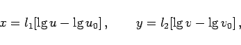
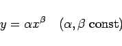

Inhalt Index DeskTop Bronstein

 Funktionen und ihre Darstellung Skalen und Funktionspapiere Funktionspapiere
Funktionen und ihre Darstellung Skalen und Funktionspapiere Funktionspapiere


Wenn beide Achsen eines rechtwinkligen x,y-Koordinatensystems logarithmisch unterteilt sind, dann spricht man vom doppelt-logarithmischen Funktionspapier oder vom doppelt-logarithmischen Koordinatensystem.
|  | (2.262) |
wobei l1, l2 Maßstabsfaktoren sind und u0,v0 Anfangspunkte.
|  | (2.263) |
als Geraden dargestellt (s. Rektifizierung einer Potenzfunktion). Diese Eigenschaft wird in der gleichen Weise wie beim einfach-logarithmischen Papier genutzt.